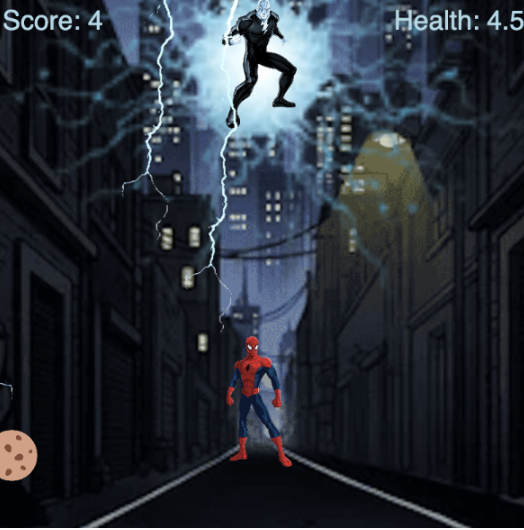

This is an example of my best work because it truly showcases my potential and was the most time consuming project I had worked on. I am proud of the project as a whole because it was a theme I loved. What makes this stand out is the background and details added throughout. This work was difficult as I was trying to figure out how to make it challenging but not impossible for users. I used persistence and the rubric given as a guide to complete my work.
Back